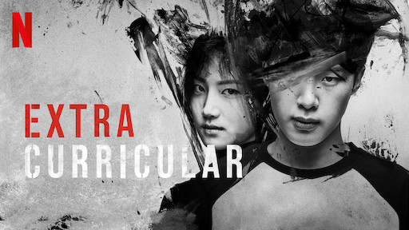
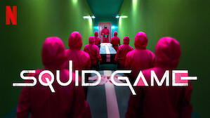
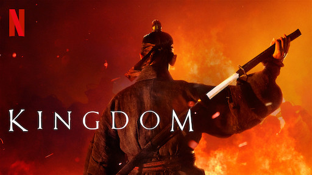
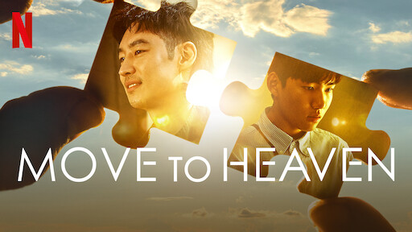
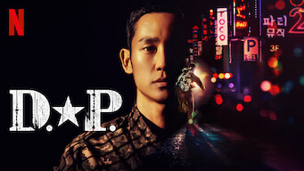
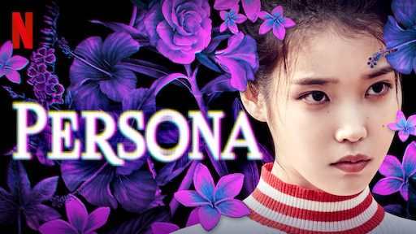
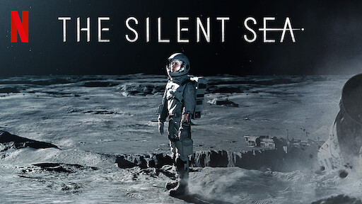

- Itaewon Class
Intégrale - Extracurricular
 Qu'est ce qui cloche chez la secrétaire Kim ?
Qu'est ce qui cloche chez la secrétaire Kim ?
Intégrale Vincenzo
Vincenzo
Intégrale- Squid Game
- Goblin
Intégrale - Kingdom
- Move to Heaven
 My Name
My Name
Intégrale- Goedam
Anthologie  It's Okay To Not Be Okay
It's Okay To Not Be Okay
Intégrale- Hellbound
 I'm Not A Robot
I'm Not A Robot
Intégrale- D.P.
- Persona
Anthologie - The Silent Sea
Park Sae-royi est un lycéen tout à fait normal. Condamné pour violence et tentative de meurtre sur l'assassin de son père, il passe trois ans en prison et jure à sa sortie de se venger.
Un lycéen modèle impliqué dans des activités criminelles voit sa double vie menacée lorsqu'une de ses camarades de classe commence à s'intéresser à ses secrets.
Lee Young-joon, vice-président d'une grande entreprise, est bouleversé lorsque sa secrétaire, Kim Mi-so, annonce sa démission après avoir occupé son poste pendant 9 ans.
Profitant d'une visite dans son pays natal, un avocat mafieux italo-coréen s'attaque à un puissant conglomérat pharmaceutique et rend justice à sa manière.

Tentés par un prix alléchant en cas de victoire, des centaines de joueurs acceptent de s'affronter lors de jeux pour enfants aux enjeux mortels.

Durant l'ère de Goryeo, Kim Shin était un général de guerre invincible et jalousé du jeune roi. Condamné à mort par le souverain, il survit mais devient alors un être immortel.
Inquiétés par les étranges rumeurs qui entourent leur roi malade, les habitants d'un royaume se tournent vers le prince héritier pour les protéger d'un fléau mystérieux.


Un jeune homme méticuleux et son oncle, qu'il connaît à peine, mettent en ordre les affaires des défunts et offrent une dernière histoire à leurs proches.
Dévastée par le meurtre de son père, une femme mise sa vengeance sur un puissant caïd de la pègre, qui la charge d'infiltrer la police.
Lorsque la nuit tombe sur la ville, les ombres et les esprits s'éveillent dans cette série d'anthologie d'horreur qui revisite les légendes urbaines.
Une auteur de livres pour enfants asociale et un soignant d'unité psychiatrique altruiste se rencontrent et font ensemble un bout de chemin riche en émotions.

Des créatures venues d'ailleurs condamnent violemment les gens à l'enfer et favorisent l'émergence d'une secte religieuse fondée sur la théorie d'une justice divine.
Min-kyu vit retiré du monde à cause d’une allergie aux humains. Ses habitudes d'ermite vont être chamboulées par l'intrusion d'un robot pas comme les autres dans sa vie.
En République de Corée, tous les hommes doivent accomplir leur service militaire, comme prescrit dans la Constitution de la République de Corée. Article 3 de la Loi sur le service militaire.
Quatre court-métrages signés de réalisateurs coréens salués par la critique explorant différents personnages interprétés par la chanteuse et actrice IU.
Dans un avenir sombre, les réserves d'eau de la Terre s'épuisent, entraînant la désertification et le manque de nourriture. Une équipe composée d'experts est mise sur pied pour mener à bien une mission spatiale délicate.